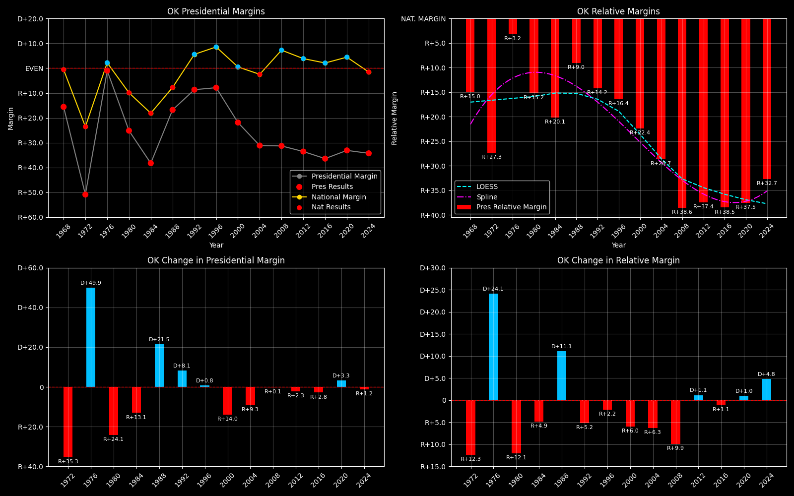

← Back to Map

Oklahoma (OK) statewide
Oklahoma (OK) — Data
| Year | D | R | Margin | Rel. Margin | Nat. Margin | Margin Δ | Rel. Margin Δ | Nat. Margin Δ |
|---|
| 1976 | 532,442(49.4%) | 545,708(50.6%) | R+1.2 | R+3.5 | D+2.3 | | | |
| 1980 | 402,026(36.6%) | 695,570(63.4%) | R+26.7 | R+16.4 | R+10.3 | R+25.5 | R+12.9 | R+12.6 |
| 1984 | 385,080(30.9%) | 861,530(69.1%) | R+38.2 | R+20.0 | R+18.2 | R+11.5 | R+3.5 | R+7.9 |
| 1988 | 483,423(41.6%) | 678,367(58.4%) | R+16.8 | R+9.1 | R+7.7 | D+21.4 | D+10.9 | D+10.6 |
| 1992 | 473,066(44.4%) | 592,929(55.6%) | R+11.2 | R+18.5 | D+7.2 | D+5.5 | R+9.4 | D+14.9 |
| 1996 | 488,105(45.6%) | 582,315(54.4%) | R+8.8 | R+18.4 | D+9.6 | D+2.4 | D+0.1 | D+2.4 |
| 2000 | 474,276(38.9%) | 744,337(61.1%) | R+22.2 | R+22.7 | D+0.5 | R+13.4 | R+4.3 | R+9.1 |
| 2004 | 503,966(34.4%) | 959,792(65.6%) | R+31.1 | R+28.7 | R+2.5 | R+9.0 | R+6.0 | R+3.0 |
| 2008 | 502,496(34.4%) | 960,165(65.6%) | R+31.3 | R+38.8 | D+7.5 | R+0.1 | R+10.2 | D+10.0 |
| 2012 | 443,547(33.2%) | 891,325(66.8%) | R+33.5 | R+37.6 | D+4.0 | R+2.3 | D+1.3 | R+3.5 |
| 2016 | 420,375(30.7%) | 949,136(69.3%) | R+38.6 | R+40.9 | D+2.3 | R+5.1 | R+3.4 | R+1.7 |
| 2020 | 503,890(33.1%) | 1,020,280(66.9%) | R+33.9 | R+38.4 | D+4.5 | D+4.7 | D+2.5 | D+2.2 |
| 2024 | 499,599(32.5%) | 1,036,213(67.5%) | R+34.9 | R+33.4 | R+1.5 | R+1.1 | D+5.0 | R+6.0 |
Column explanations
- Year
- Election year.
- D
- Number of votes for the Democratic candidate (raw count).
- R
- Number of votes for the Republican candidate (raw count).
- Margin
- Margin between the two major-party candidates ((D - R)/(D + R)).
- Rel. Margin
- The presidential margin relative to the national presidential margin (Margin - Nat. Margin).
- Nat. Margin
- The national presidential margin for that year ((D_total - R_total)/(D_total + R_total)).
- Δ
- Change (delta) in the value from the previous election year. Blank if no data for previous year.